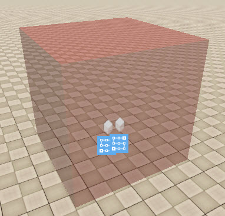
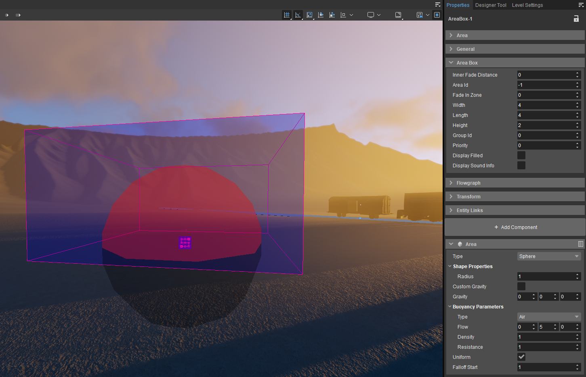
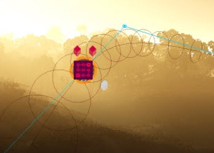

В этом руководстве показано, как настроить расширенные физические ограничения для ограничения движения физического объекта с использованием трехмерных объектов в качестве ограничений поверхности и использования сплайновых траекторий.
Ограничение движения внутри трехмерной фигуры
Настройка ограничений 3D-объекта
- Добавьте компонент «Физическая область»
Установите область компонента Area Тип чтобы Коробка, Сфера, Капсула, Цилиндр, или Геометрия. Эта форма будет функционировать как фактическое ограничение поверхности.
Если вы включите прокси (через Панель инструментов ViewModes → Наложение прокси-серверов столкновений кнопку, см. изображение ниже), компонент «Область» отобразит выбранный тип фигуры в красный, и именно этот объем станет пространством, по поверхности которого может перемещаться ваша ограниченная сущность.
Кнопка «Наложение прокси-серверов столкновений»
Красный физический проксиЧтобы узнать, как отобразить панель инструментов ViewModes, см. эта страница.
Используйте Размер, Радиус и Высота свойства для управления его размером. Для более сложных ограничений выберите Геометрия и загрузить закрыто CGF сетка. Имейте в виду, что для типа Geometry прокси В качестве ограничения будет использоваться сетка CGF, а не видимая сетка.
Гладкие поверхности подойдут лучше всего.- Создайте физический объект (компоненты Mesh + RigidBody со значением массы или плотности).
- Добавить ограничение плоскости компонент к объекту. Ориентация не имеет значения. Ограничения точек и линий будут нет работа с компонентами области 3D-физики.
Использование Свойства → Ссылки на сущности чтобы связать физический объект с добавленной вами формой области.
Убедитесь, что вы закройте инструмент «Выбрать объект» после выбора формы области.- Скопируйте Имя ссылки на объект и вставьте его в Имя вспомогательной ссылки свойство компонента Plane Constraint, прикрепленного к физикализованному объекту. Объект теперь ограничен формой области.
- Убедитесь, что ваш физический объект расположен внутри красная область физики, которая у вас есть, с центром вращения как можно ближе к плоскости поверхности, иначе она зацепится за ближайшую часть области ограничений при запуске игры, возможно, столкнувшись с другими объектами.
Движение будет ограничено края - внешняя поверхность - компонента области объемной физики (показан красным, когда показаны прокси. Это может работать для чего-то вроде насекомое это должно только ползать вдоль поверхности и не летает, или цирковой мотоцикл, который должен передвигаться только по внутренней поверхности сферической клетки.
Обратите внимание, что вы также можно добавить компонент «Физическая область» в поле «Область», сферу, твердое тело, путь или даже объем клипа. (Вы не можете добавлять компоненты в объемы воды.) Геометрия самой формы области (показана синим цветом) будет игнорироваться ограничением, поэтому используете ли вы форму области или пустой объект, не имеет значения, поскольку сама форма ограничения берется из компонента «Физическая область». То есть единственной причиной использования области или объема клипа может быть выполнение другой функции, а не ограничения движения. Форма области по сути является просто контейнером, но ее форма игнорируется любыми привязанными к ней движущимися объектами. Помните, что фактическую геометрию, которая используется в качестве ограничения поверхности, можно увидеть только в том случае, если физические прокси сделаны видимыми и отображаются красным цветом.
На изображении в качестве примера красная сфера создается компонентом физической области и будет использоваться в качестве ограничения поверхности; синий прямоугольник создается рамкой области и не будет иметь никакого эффекта в качестве ограничения.

Красная сфера, созданная компонентом Physics Area
Перемещение объектов вдоль ограничения пути сплайна
Этот тип ограничения пути можно использовать в таких случаях, как разрешение подводной лодке или киту следовать по определенному пути в воде, или птице или самолету следовать определенному, невидимому пути в воздухе. (Для объектов, повторяющих геометрию, таких как бобслейная трасса или ландшафт, вероятно, имеет смысл просто использовать физику и позволить гравитации или физическому импульсу перемещать объект.)
Чтобы вы могли увидеть невидимые в противном случае компоненты физической области, в консоли введите p_draw_helpers 1. Или на панели инструментов «Режимы просмотра» включите p_draw_helpers_num 7970 кнопка.
Также убедитесь, что помощники включены.
Добавление ограничения пути
Используйте Создать объект инструмент для добавления Площадь → Форма сущность. Нарисуйте желаемый путь. Вы заметите, что на данный момент ваша фигура состоит только из прямых линий. Позже этот путь будет автоматически интерполирован в сплайновый путь.
Рекомендуется рисовать максимально простой путь, double клик в последнем пункте выход режим создания объекта. Затем вы можете использовать Редактировать фигуру кнопку в свойствах фигуры на панели «Свойства», чтобы переместить существующие точки, Ctrl-клик на пути, чтобы добавить новые точки, нажав double, чтобы удалить существующие точки.У вас должно быть минимум три точки.- Путь может быть открыть (линия) или закрыто петля (например, американские горки или гоночная трасса).
Добавить Физика → Площадь компонент. Установить область компонента области Тип чтобы Путь(Сплайн). Компонент области покажет путь в красный, и вы увидите разрешенную зону движения, нарисованную в виде туннеля:

Сплайновый путь
Используйте радиус свойство контролировать диаметр туннеля.Радиус туннеля должен быть больше физического прокси объекта, проходящего через него.
Вы увидите, что исходный прямой путь теперь интерполирован в сплайновый путь. Возможно, вы захотите отредактировать исходную форму области, сохраняя при этом прокси видимыми, чтобы можно было настроить путь сплайна.
Добавление ограниченного подвижного объекта
- Используйте Создать объект инструмент для создания физической сущности (сетка + RigidBody компоненты). Назначьте ему Масса.
Добавить Физика → Линейное ограничение компонент к физическому объекту.
Хотя ограничение линии может располагаться вдоль любой оси, имейте в виду, что объект будет повернут в начале игры, поэтому ограничение линии будет параллельный к пути сплайна, поэтому, если у вашего подвижного объекта есть узнаваемые передняя и задняя части, обязательно сделайте ограничение линии и сам объект параллельными пути сплайна, ближайшему к объекту, лицом вперед в направлении потока.
А сплайн представляет собой обобщение линия ограничение, которое позволяет ограниченному объекту перемещаться по траектории сплайна. Никакой другой тип ограничения не будет работать.
Выбрав физический объект, в Свойствах → Ссылки на сущности панель, нажмите на Инструменты для создания ссылок → Выбрать и свяжите объект с формой области.
Убедитесь, что вы закройте инструмент «Выбрать объект» после выбора формы области.- Скопируйте имя из ссылка на объект между физическим объектом и формой области.
Вставить имя ссылки в компоненте ограничения линии Параметры крепления → Имя вспомогательной ссылки собственность. Это ограничивает движение объекта траекторией сплайна области.
Чтобы ваша сущность могла двигаться, Радиус компонентов области физики Форма → Радиус свойства должны быть достаточно большими, чтобы вместить ваш объект. Слишком маленький радиус «сожмет» объект и затруднит его движение.- Чтобы проверить ограничение, включить физику/AI (Ctrl + П) и используйте Тяни физику инструмент для перетаскивания объекта по траектории области.
Автоматическое перемещение объекта по пути
Хотя вы можете использовать любую силу для перемещения объекта вдоль ограничения пути, вы также можете использовать Физика → Площадь компонент Поток значение для перемещения объектов по пути сплайна. Если движение происходит не просто в одном направлении, а путь изгибается в разных направлениях или представляет собой замкнутую петлю, отключить тот Униформа собственность, чтобы сохранить силу позади объект, независимо от того, в какую сторону он обращен. В противном случае положительный Поток значение по оси Y, например, будет только толкнет объект в положительном направлении по оси Y и толкнет объект назад, если направление пути повернется на 180 градусов.
Управление поворотом
Если у вашего движущегося объекта есть очевидный верх/низ, вы можете заметить, что он вращается в виде «бочки» во время движения – скручиваясь вокруг оси линейного ограничения. Чтобы это контролировать:
- Отключить Блокировка вращения на Линейное ограничение компонент.
- Когда объект ограничен сплайновой траекторией с помощью компонента Line Constraint, Минимальный предел и Максимальный предел линейного ограничения больше не влияют на то, насколько далеко объект может скользить вдоль линии; они контролируют, как далеко объект может вращать вокруг оси линейного ограничения. Эти единицы указаны в степени. Поэкспериментируйте с диапазоном значений, чтобы получить желаемую величину вращения.
- Для дальнейшего контроля добавьте компонент Point Constraint к движущемуся объекту, используя ось Z (или любую другую ось). перпендикулярный к ограничению линии).
- Включить Свободная позиция.
- Удалить значение по умолчанию Имя вспомогательной ссылки на Точечное ограничение компонент.
- Чтобы увидеть ось точечного ограничения, вы можете слегка переместить ее вверх или вниз, чтобы она не перекрывала линейное ограничение. Установите Минимальный лимит чтобы -360 и Максимальный лимит чтобы 360.
- Максимальный угол YZ Значение контролирует, насколько объект может «катиться по бочке», а также насколько далеко объект может вращаться вокруг своей собственной оси Z, поэтому это значение должно быть достаточно большим, чтобы он мог перемещаться по поворотам вашего сплайн-пути. Проверьте, отрегулируйте и используйте минимально возможное значение, чтобы избежать эффекта «качки бочки».
- Когда вы рисуете фигуру области, поместите все точки в та же высота (например, привязка к плоской местности). Хотя вы можете редактировать форму области и перемещать ее по желанию, чем больше разница в положении, тем круче будут повороты на пути вашего сплайна, и тем больше вам придется позволять движущемуся объекту поворачиваться, чтобы перемещаться по поворотам.
- Никогда не используйте неравномерное масштабирование фигуры области (например, пытаясь выровнять положение точек на оси Z после того, как они были нарисованы).
- Остерегайтесь попыток одновременного перемещения множества объектов по одному и тому же пути сплайна; по мере увеличения количества объектов они с большей вероятностью застрянут на пути сплайна.
- Обратите внимание, что вы не можете использовать компоненты Rigidbody и Physics → Area для одного и того же объекта; Компонент Физика → Область физизирует объект.
- Начало спада Свойство устанавливает расстояние в процентах от радиуса физической области, на котором эффекты физической области начинают линейно уменьшаться, пока не достигнут нуля на внешнем крае, если это необходимо. В противном случае, если значение по умолчанию равно 0, эффекты будут одинаковыми по всему объекту.